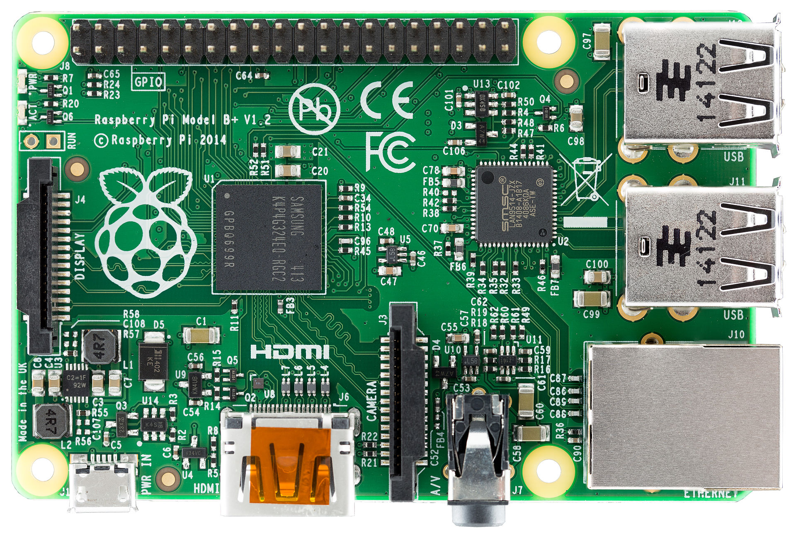
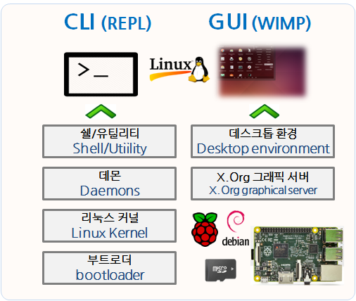
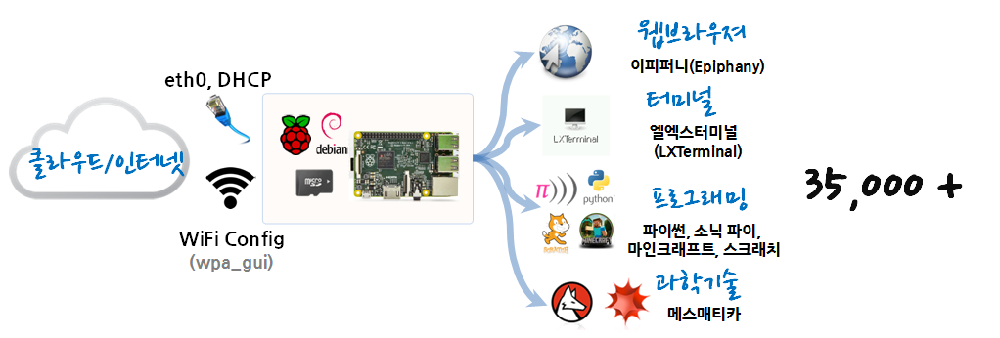
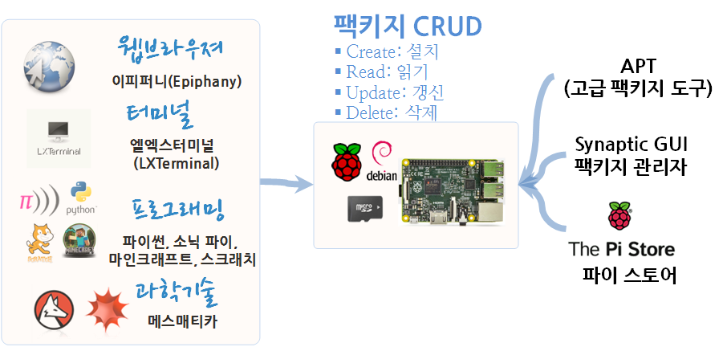
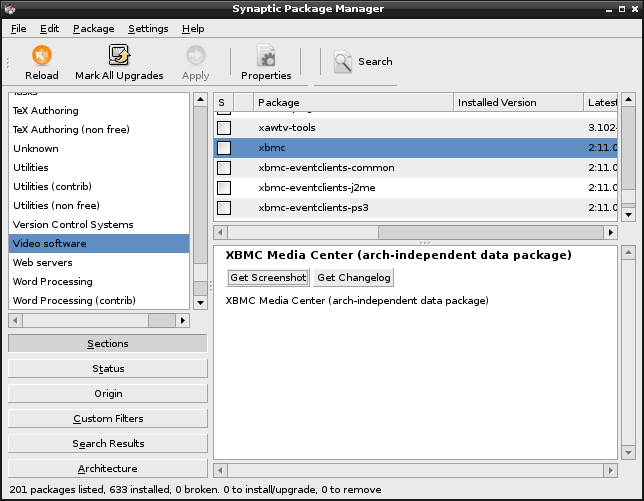

R 파이썬 소프트레이어 클라우드, xwMOOC
라즈비언 운영체제 (데비안, Debian)
학습 목표
- 데스크톱, 노트북을 대신하는 라즈베리 파이
- 라즈비언 운영체제 기본 기능을 학습한다.
- 라즈비언과 함께 번들로 설치된 프로그램을 숙지한다.
- 데비안 라즈비언에 35,000 개 이상되는 팩키지를 설치, 갱신, 제거한다.

1. 라즈베리 파이 하드웨어 스펙 비교
| 구분 | RPi 1 모델 A | RPi 1 모델 B | RPi 1모델 B+ | RPi 2 모델 B |
|---|---|---|---|---|
| 사진 |  |
 |
 |  |
| SOC(System-on-Chip) | BCM2835 | BCM2835 | BCM2835 | BCM2836 |
| GPU | 브로드컴 VideoCore IV | 브로드컴 VideoCore IV | 브로드컴 VideoCore IV | 브로드컴 VideoCore IV |
| CPU | ARM11 700 MHz | ARM11 700 MHz | ARM11 700 MHz | ARM Cortex A7 900 MHz |
| 주기억장치 | 256 MB | 512 MB | 512 MB | 1 GB |
| USB 포트 | 1 | 2 | 4 | 4 |
| 이더넷 포트 | 0 | 1 | 1 | 1 |
| 가격 | $25 | $35 | $35 | $35 |
| 전력 | 300 mA (5V) | 700 mA (5V) | 600 mA (5V) | 800 mA (5V) |
2. 라즈비언 운영체제
라즈비언(raspbian)은 라즈베리 파이 하드웨어에 가장 많이 선택되는 운영체제다. 라즈비언은 리눅스 데비안 운영체제에 기반하고 있고, 따라서 약 35,000 개 소프트웨어 팩키지도 자동으로 사용가능하다.
다른 리눅스 배포판과 마찬가지로 라즈비언도 동일한 부팅과정을 거치게 된다.

- 부트로더 (bootloader) : 부트로더는 라즈베리 하드웨어를 사용할 수 있도록 초기화하는 역할을 한다. 1차 2차 3차 부트로더 단계로 나눠지는데, 크게 1차 부트로더 단계는 라즈베리 파이 하드웨어가 제조되는 단계에서 제조업체(과거 중국, 현재 영국)가 ROM 을 집어넣는 것으로 변경할 수 없다. 2차 3차 부트로더 단계는 SD 카드에 올라온 리눅스 저장정보를 사용해서 진행된다.
- 1 단계: GUP에서 시작되고 SoC 펌웨어를 실행하고 L2 캐쉬에 2단계 실행될 코드를 적재한다.
- 2 단계: SD 카드에서
bootcode.bin파일을 읽어온다. SDRAM 을 초기기화하고 3 단계 코드를 적재한다. - 3 단계:
loader.bin파일에서start.elf파일을 적재하고,kernel.img파일을 적재한다.- 커널 이미지가
config.txt,cmdline.txt,bcm2835.dtb파일에 읽어서 운영체제 준비를 마친다.
- 커널 이미지가
- 1~3 단계는 SoC 제조사인 브로드컴이 소스코드를 공개하지 않고 칩에 넣거나 컴파일한 바이너리 파일을 배포한다.
- 리눅스 커널(Linux Kernel) : 리눅스 커널을 키보드에서 올라온 정보를 화면에 출력하는 역할처럼 라즈베리 파이 하드웨어와 응용프로그램을 연결하는데 모두 관여한다. 새로운 하드웨어가 나오면 리눅스 커널이 존재를 인지하고 사용하는 방법을 알아야 응용프로그램에서 사용할 수 있게 지원한다. USB, HDMI, 이더넷 포트 모두 꽂으면 동작할 수 있게 하는 것도 리눅스 커널의 역할이다. 커널 적재가 끝나면 자동으로
init프로그램을 호출해서 라즈베리 하드웨어 초기화를 종료하고 나서, 나머지 프로그램 (데몬, 그래픽사용자 인터페이스)을 순차적으로 올리게 한다. - 데몬(Daemons) : 데몬은 서로 다른 기능을 담당하는 소프트웨어로 조용히 뒤에 떠있다.
cron,autofs를 예로 들 수 있는데,crontab은 조용히 떠있다 정해진 시간이 되면 자동으로 소프트웨어를 실행하는 역할을 담당하고,autofs는 USB 같은 이동식 디스크 장비를 마운트시키는 역할을 한다. - 쉘(Shell)/쉘 유틸리티(Shell Utility) : 라지비언은 배쉬(bash) 쉘을 사용하는데, 스트립트를 사용해서 작업 자동화를 쉽게 해준다. 예를 들어, 프로그램을 실행, 키보드 입력 받고, 출력 내보내기 등이 여기에 포함된다. 쉘 유틸리티는 파일 복사, 디렉토리 생성, 팩키지 관리(APT, Advanced Packaging Tool) 등 좀더 큰 단위 작업을 지원한다.
- X.Org 그래픽 서버 : X.Org 역할은 마우스 포인터 이동을 포함한 모든 그래픽 사용자 인터페이스에 대한 구성요소를 제공한다.
- 데스크톱 환경(Desktop Environment) : X.Org 가 적재되면, 마이크로소프트 윈도우 환경과 마찬가지로 데스크톱 환경에서 인터넷 검색, 동영상 감상 등 다양한 작업을 직관적이고 쉽게할 수 있도록 지원한다. 라즈베리 파이에 특화된 데스크톱 환경이 LXDE (Lightweight X11 Desktop Environment)다.
데몬과 쉘이 적재되면 명령라인 인터페이스(CLI)로, X.Org와 LXDE가 올라가면 그래픽 사용자 인터페이스로 라즈베리 파이를 제어할 수 잇다.
2.1. 파일 시스템
파일 시스템(file system, 문화어: 파일체계)은 컴퓨터에서 파일이나 자료를 쉽게 발견 및 접근할 수 있도록 보관 또는 조직하는 체제를 말하는데, 리눅스는 모든 것을 파일 시스템 계층 구조를 가지고 관리한다. 즉, 루트 디렉토리 / 밑으로 리눅스의 모든 파일과 디바이스는 계층 구조를 갖는다. Filesystem Hierarchy Standard, FHS, 파일시스템 계층구조 표준에 따라 리눅스의 모든 정보는 파일로 관리되고, 파일이 아닌 것은 프로세스다.
| 디렉토리 명칭 | 설명 |
|---|---|
| / | 기본 계층 모든 파일 시스템 계층의 기본인 루트 디렉토리 |
| /bin/ | 모든 사용자를 위해 단일 사용자 모드에서 사용 가능해야 하는 명령어 바이너리, 예를 들면, cat, ls, cp. |
| /boot/ | 부트 로더 파일, 예를 들면, kernels, initrd. 흔히 별개의 파티션에 놓는다. |
| /dev/ | 라즈베리 파이에 부착되는 모든 장치는 여기에서 이용가능하다, 예를 들면 /dev/null, /dev/sda1 |
| /etc/ | 소프트웨어 팩키지에 대한 설정 파일. 예를 들면, /etc/opt/, /etc/X11, /etc/xml/ |
| /home/ | 저장된 파일, 개인 설정, 기타 등을 포함한 사용자의 홈 디렉토리. |
| /lib/ | /bin/과 /sbin/에 있는 바이너리에 필요한 라이브러리, 해당 폴더에 확장자 .so를 갖는다. |
| /media/, /mnt/ | CD-ROM과 같은 이동식 미디어의 마운트 지점, 임시로 마운트된 파일 시스템 |
| /opt/ | 라즈비언에 디폴트 기본설치되지 않는, 선택 가능한 응용 소프트웨어 패키지. |
| /proc / | /proc 폴더의 모든 파일은 특수한 파일로, 커널에 환경정보와 다양한 통계정보에 접근할 수 있게 한다. |
| /root / | 루트 사용자의 홈 디렉토리. |
| /sbin / | 필수 시스템 바이너리, 예를 들면, init, ip, mount. |
| /tmp / | 임시 파일 (/var/tmp 참고). 시스템이 재부팅되면 보존되지 않는 경우가 흔하다. |
| /usr / | 읽기 전용 사용자 데이터가 있는 보조 계층 구조. 주요 (다중) 사용자의 유틸리티와 애플리케이션을 포함하고 있다. |
| /var / | 일반적인 시스템의 운영 체제에서 내용이 자주 바뀔 듯한 파일, 변하기 쉬운 파일 로그, 스풀 파일, 임시전자 우편 파일 등. |
2.2. 라즈비언 네트워크
라즈비언이 설치된 라즈베리 파이를 인터넷에 연결시키는 방식은 유선(이더넷), 무선(와이파이) 방식 두가지 모두 지원한다.
2.2.1. 유선 이더넷(ethernet)
IP 주소를 DHCP 방식으로 동적으로 가져와서 인터넷에 연결하는 방식이다. 자동으로 연결된 유선 인터넷 연결정보는 ifconfig eth0 를 입력하면 확인 가능하고, address, netmask, gateway 정보도 얻을 수 있다.
별도 설정이 필요없이 좋은 장점이 있지만, IP주소가 매번 바뀌어 이것이 불편할 수도 있다. 이런 경우 고정 IP로 설정한다. nano /etc/network/interfaces 명령어로 파일을 열어 iface eth0 inet static 부분을 다음과 같이 변경하면 된다.
pi@raspbian ~ $ ifconfig eth0
eth0 Link encap:Ethernet HWaddr b8:27:eb:75:38:97
inet addr:192.168.103.131 Bcast:192.168.103.255 Mask:255.255.255.0
UP BROADCAST RUNNING MULTICAST MTU:1500 Metric:1
RX packets:578 errors:0 dropped:13 overruns:0 frame:0
TX packets:318 errors:0 dropped:0 overruns:0 carrier:0
collisions:0 txqueuelen:1000
RX bytes:49658 (48.4 KiB) TX bytes:38473 (37.5 KiB)pi@raspbian ~ $ nano /etc/network/interfacesauto eth0
iface eth0 inet static
address 192.168.103.131
netmask 255.255.255.0
gateway 192.168.103.255pi@raspbian ~ $ sudo service networking restart 2.2.2. 무선 와이파이(WiFi)
와이파이 동글을 사용해서 라즈베리 파이 인터넷 연결을 하면 편리할 수 있지만, RPi VerifiedPeripherals 사이트에서 검증된 주변장치인지 먼저 확인한다. WiFi Config를 사용해서 무선 인터넷 설정을 한다. 바탕화면에 아이콘을 클릭하거나, wpa_gui 명령어를 실행해서 GUI를 사용해서 설정하는 방식이 하나 있고, 여기서는 CLI 콘솔을 사용한 방법을 시도해 본다. 만약 wpa_gui 가 실행되지 않으면 팩키지를 설치해야 한다.
sudo apt-get install wpaguidmesg | more 를 입력하고 나서 차례로 내려가다보면, 와이파이동글 하드웨어가 리눅스 커널에 잡힌 것을 볼 수 있다.
root@raspbian:/home/pi# dmesg | more[ 1365.980063] usb 1-1.2: new high-speed USB device number 7 using dwc_otg
[ 1366.081659] usb 1-1.2: New USB device found, idVendor=0bda, idProduct=8176
[ 1366.081686] usb 1-1.2: New USB device strings: Mfr=1, Product=2, SerialNumber=3
[ 1366.081704] usb 1-1.2: Product: 802.11n WLAN Adapter
[ 1366.081721] usb 1-1.2: Manufacturer: Realtek
[ 1366.081738] usb 1-1.2: SerialNumber: 00e04c000001nano /etc/network/interfaces을 입력해서 네트워크 설정 파일을 열고, wpa-ssid에 잡힌 무선와이파이와 wpa-psk에 와이파이 비밀번호를 입력하고 저장하고 다시 네트워크를 실행한다.
pi@raspbian ~ $ nano /etc/network/interfacesallow-hotplug wlan0
auto wlan0
iface wlan0 inet dhcp
wpa-ssid "xwMOOC-Free-WiFi"
wpa-psk "xwMOOC-Pa$$wd"pi@raspbian ~ $ sudo service networking reload참고 : How-To: Add WiFi to the Raspberry Pi
2.3. 라즈비언 운영체제와 함께 설치된 프로그램

- 웹브라우져 : 크롬과 사파리 웹브라우져와 유사한 이피퍼니(Epiphany)
- 터미널 : CLI 명령라인 인터페이스로 라즈베리 파이 컴퓨터를 제어하는 엘엑스터미널(LXTerminal) 콘솔
- 나노편집기: GNU 나노(nano) 편집기가 포함되어 있어 텍스트를 편집한다.
- 프로그래밍 : 스크래치와 파이썬이 내장되어 있어 다양한 프로그래밍이 바로 가능하다.
- 소닉 파이(Sonic Pi) : 파이썬으로 소리를 프로그래밍한다.
- 파이썬 2, 3 : 파이썬 2, 3가 내장되어 있고, 기왕 시작하는 분은 파이썬 3로 시작할 것을 추천한다.
- 마인크래프트 파이 : 온라인 레고 마인크래프트가 라즈비언에 내장되어 있어 파이썬으로 가상세계를 만들 수 있다.
- 스크래치 : 블록 프로그래밍 언어의 가장 성공적인 언어로 누구나 마우스 사용법만으로도 충분히 코드를 작성할 수 있다.
- 데비안 도움말(Debian Reference): 라즈비언이 데이안 운영체제에 기반하고 있어 데비안 도움말을 통해서 운영체제에 대한 상세한 내용을 참고할 수 있다.
- 파이 스토어(Pi Store) : 라즈베리 재단이 2012년 12월에 만든 것으로 파이 스토어는 라즈베리 파이용 응용프로그램, 게임, 교재, 도구를 운영하는 중앙 저장소 같은 역할을 한다.
- 과학기술 : 매스매티카(Mathematica)는 스티브 잡스의 NEXT 컴퓨터 이후 두번째로 번들되어 라즈베리 파이에 제공된다.
- 파일 관리자 : 윈도우 탐색기와 마찬가지로 파일관리자를 통해서 파일과 디렉토리 관리를 직관적이고 쉽게 한다.
4.3. 마인크래프트 파이썬
2.4. 라즈비언 팩키지 관리 프로그램
라즈비언의 기반 리눅스 배포판인 데비안은 35,000 이상의 소프트웨어 팩키지가 있고, 거의 매일 수시로 신규 버젼이 개발되어 공개되고 있다. 이러한 다양한 소프트웨어를 본인이 모두 개발하는 것도 가능하겠지만, 특별한 경우를 제외하고 잘 골라서 목적에 맞게 사용할 것을 추천한다.

사전에 설치된 소프트웨어 이외에 라즈비언에 소프트웨어를 설치하는 방법은 크게 3가지 방식이 있다.
- 명령라인 인터페이스 : apt-get, (고급 팩키지 도구, Advanced Package Tool, APT)
- GUI 팩키지 관리자: 시냅틱(Synaptic) GUI 패키지 관리자
- 앱스토어: 파이 스토어(Pi Store)
이외에도 소스 파일을 받아서 컴파일해서 설치하는 방식도 있고, Aptitude, RPM, dpkg 등 다양한 방식이 있다.
2.4.1. apt-get 명령라인 인터페이스
sudo apt-get install r-base 명령어를 통해서 가장 많이 사용되는 데이터 과학 언어 R을 설치한다. 설치 중간에 R을 설치할려고 하는데 용량이 얼마 차지될건데 계속할건지 물어본다. 당연히 y 를 입력한다. 매번 이런 작업도 귀찮아지면 sudo apt-get install -y r-base처럼 -y 를 입력하면 된다.
sudo apt-get remove r-base 명령어를 통해서 아파치 웹서버를 제거한다.
sudo apt-cache search r-base처럼 apt-cache search 명령어를 통해서 해당 소프트웨어 팩키지 유무를 확인하고 확정한 팩키지명을 사용하여 설치한다.
sudo apt-get update 명령어는 팩키지가 최신 버젼이 있는지 목록정보를 갱신하는 역할을 한다. 항상 팩키지를 설치할 때 실행하는 습관을 갖자.
sudo apt-get upgrade 명령어는 팩키지를 갱신시킨다. update에서 가져온 목록과 현재 라즈비언에 깔린 프로그램간 차이점을 보고 갱신 여부를 판단한다.
2.4.2. 시냅틱(Synaptic) GUI 팩키지 관리자
apt-get 명령라인 인터페이스를 통한 동일한 작업을 synaptic 그래픽 사용자 인터페이스를 통해서 작업할 수 있다.
sudo apt-get install synaptic 
2.4.3. 파이 스토어(Pi Store)
파이 스토어는 앱스토어와 동일한 개념으로 상업목적의 소프트웨어 팩키지를 파이 스토어를 통해서 구입할 수 있는 차이가 있다. 따라서, 상업용 팩키지를 구매하려면, 신용카드 같은 결재수단을 등록해야한다. 다른 일반 스마트폰에 연결된 결재정보와 그다지 차이는 없다.

참조: Learning Raspbian: Get up and running with Raspbian and make the most out of your Raspberry Pi